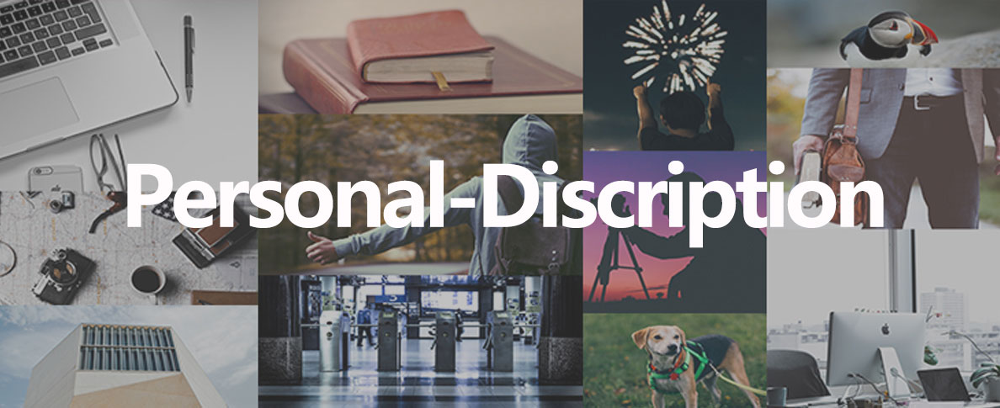

基本信息
洪志华 （Henry) 男
生于：1992年11月15日 家乡：江西.九江
2015年7月-至今 东南大学 工业设计专业 （研究生）
2010年9月-2014年6月 兰州理工大学 机械设计制造及其自动化专业 （本科）
求职意向：用户体验设计和产品设计相关岗位
联系方式
电话：18172928783
邮箱：452346979@qq.com
微信：hzh-12399
专业技能
软件：PS ;AI; AE; InDesign; X Mind; Axure; Rehino; Keyshot; Office。
设计方法：头脑风暴； 同理心； 场景&人物模型；竞品分析； 任务流&故事板； 信息架构； 用户旅程地图； 原型&用户测试。
英语能力：英语六级；英语四级；Monash MEB。
实习经历
2017年5月-至今 Originoo 锐景创意 产品经理助理/交互设计师
负责公司网页的产品、交互和视觉设计工作，协调资源保证产品按期上线。负责并参与锐景2.0改版（电商化）设计工作，并设计完成移动端H5页面设计。
2016年10月-2017年5月 ebay （上海）海外卓越中心 交互设计师/视觉设计师
负责公司iHub（大数据展示网页）网站的相关交互和视觉设计工作，独立完成部门子产品的高保真原型制作，支持各部门的相关设计工作。
项目经历
Originoo锐景创意 H5设计（移动端的活动版块，按APP标准设计）
2017年6月-2017年8月 使用工具：PS Axure 已排期9月中上线
Originoo锐景创意 H5设计，主要功能是将网页端的摄影活动搬到移动端。主要功能查看活动详情和活动参赛作品，上传个人作品等。依照公司的长期战略需要上线一款APP，但核心功能定位还不是很清晰。本次设计按APP标准设计，为锐景创意APP的前身和试水，由本人独立完成。
Memory Navigation (APP Concept Design)
2017年6月-2017年7月 使用工具：PS Axure
Memory Navigation 为一款旅行经历记录和查看APP，主要特色为将地图、定位和导航元素融入了APP设计，上传图片和详情和查看行程直观简单，按时间地点的不同将不同旅行经历相互联系起来，从而组成了连续的旅行经历，回顾起来更加有趣直观简单。
Originoo锐景创意2.0全新改版（第一版的网页主要还是设计为传统图片下载网站，第二版将改版转型为图库电商网站）
2017年5月-2017年8月
1.网站图片分类导航栏设计（已上线）2.图片详情页设计电商化（已上线）3.授权书生成查看流程和页面交互设计（8月中上线）4.供稿人中心设计（8月底上线）。
ebay DSS “Trust & Risk” 网页高保真原型的设计
2017年2月-2017年4月 使用工具：PS Axure
Trust & Risk为DSS部门旗下数据展示网页之一，类似的网页还有11个。ebay UED希望现有产品都有对应高保真的网页原型在ebay Wiki上，有需求改动直接在原型上改动，交由开发实现来降低沟通阻力和成本。Trust & Risk共有10个页面，当中的score card和Off-ebay为接需求自己设计的，目前已上传至ebay Wiki上。
WeBubble 校园二手物品买卖平台 独墅湖高教区微信创新应用大赛二等奖
2015年10月-2015年12月
Webubble为校园二手物品买卖平台，服务于在校大学生和学校周边人群，买卖二手物品节约资源丰富自己的交际圈。消息以泡泡形式展示， 并设计物品描述方式为可进行语音描述。
个人描述
热爱生活，喜欢探索感兴趣的未知领域。爱好篮球美食旅行和军事科技，喜欢思考细节。相信设计改变生活，热衷于好的设计和设计灵感。对设计非常感兴趣，希望能参与一些产品设计UI交互设计工作，为团队贡献自己的力量，并与此同时学习和充实自己，明确自己的职业规划，结交各行朋友。